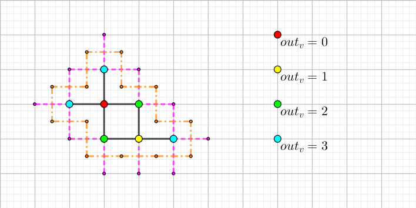

scx 的电路有 $n \times m$ 个节点，排成 $n$ 行 $m$ 列。任意两个相邻节点之间连着一条导线。如果两个节点 $(x_1, y_1), (x_2, y_2)$ 满足 $\left| x_1 - x_2 \right| + \left| y_1 - y_2 \right| = 1$ 则称这两个节点相邻。
scx 定义一个电路的复杂程度为最大的非负整数 $s$ 满足可以选出 $s$ 个节点使得任意两个被选中的节点间都有一根导线相连。
scx 手里还有 $r$ 根导线，可以连在 $r$ 对节点之间。她希望新加上不超过 $r$ 根导线后，电路的复杂程度最大。
请你帮 scx 手动分析她的电路，告诉她复杂程度最大是多少。
共一行，包含三个非负整数 $n, m, r$。保证 $1 \leq n, m \leq 10^9; 0 \leq r \leq 10^{18}$。
输出一行一个整数，表示最大的复杂程度。
原问题即求在一个 $(n-1) \times (m-1)$ 的网格图中加上 $r$ 条边所得的最大团大小的最大值。
考虑二分答案，设最大团大小为 $x$，则我们需要找到 $x$ 个节点，它们之间所连的边数至少是 $\dbinom x2 - r$。
我们先考虑这样一个问题：在一个无限网格图中，寻找 $x$ 个节点，使它们的导出子图的边数尽可能的大。
首先导出子图 $G$ 肯定是连通图，否则把几个连通分量接在一起边数不减。
由于边数等于每个点的度数之和的一半，因此我们只需最大化度数之和。又注意到每个点的度数等于 $4$ 减去连向外面的边数，即 $E = \dfrac 12 \sum\limits_{v \in V} (4 - out_v) $，其中 $out_v$ 为点 $v$ 连向外面的边数。因此我们需要最小化 $\sum out_v$。
根据网格图题的经典套路，我们考虑它的对偶图。我们将每一条连向外面的边都转成它的对偶边 (如上图把紫边转化为了橙边) 后，由于原图连通，因此对偶图的最外面一层是一个圈 (如上图所示，但里面可能还有其它边)。
因此 $\sum out_v$ 是不小于最外层圈的周长 $C_0$ 的。
记点集横跨的宽度为 $w$ (即最右点的横坐标减去最左边的横坐标加一，上图中为 $4$)，纵跨的高度为 $h$ (上图中为 $3$)，可以得到周长 $C_0 \geq 2(w + h)$。
所以有 $$ \sum out_v \geq C_0 \geq 2(w + h) \geq 2 \left \lceil 2 \sqrt {w \cdot h} \right \rceil \geq 2 \left \lceil 2 \sqrt {|V|} \right \rceil $$
当 $|V|$ 为完全平方数时，取 $w = h = \sqrt {|V|}$，排成一个方阵，则上式 $4$ 个不等号全部取等。此时的最小值即为 $4 \sqrt {|V|}$。
进行更加精细的分析后得到，当 $k^2 < |V| \leq k(k+1)$ 时，最小值为 $4k + 2$，当 $k(k+1) < |V| \leq (k+1)^2$ 时，最小值为 $4k + 4$。
构造就是方形螺旋绕绕绕~~ (雾)
接下来考虑有长宽限制的 (非无限网格图) 的情况。
反正也没什么区别，无非就是多了个限制 $\min \{w, h\} \leq \min \{n, m\}$，式子仍然可以推到 $\geq 2(w + h)$，此时我们只需要 $w$ 与 $h$ 尽量接近即可，那么如果 $\min \{n, m\} \leq \sqrt {|V|}$ 的话，我们直接让 $w = \min \{n, m\}$，另一端自由扩展即可。
只要保证二分的 $|V| \leq nm$，那样另一端扩展是不会溢出的。
总时间复杂度 $O \left( \log n \right)$。
#include <bits/stdc++.h>
#define N 100005
using namespace std;
typedef long long ll;
const ll MAX = 2450000000ll;
int r, c;
ll n, L, R, M;
bool check(ll x) {
int w = min((int)sqrt(x), min(r, c)), h = x / w, r = x - (ll)w * h;
ll Em = x * (x - 1) / 2 - n, E = 2ll * w * h - w - h + max(r * 2 - 1, 0);
return E >= Em;
}
int main() {
scanf("%d%d%lld", &r, &c, &n);
for (L = 1, R = min((ll)r * c, MAX); L < R; )
check(M = L + R + 1 >> 1) ? L = M : (R = M - 1);
printf("%lld\n", R);
return 0;
}
坑1：由于总边数不会超过 $n(m-1) + m(n-1) + r \leq 3 \times 10^{18}$，因此最大团的大小不会超过 $10^9 \sqrt 6$，因此二分的上限应该取 $nm$ 和 $10^9 \sqrt 6$ 的较小值，以避免 long long 溢出。